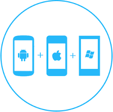

Prestations de services

Developpement web
Un site Web devrait être un investissement qui vous permet d'obtenir plus de clients, de développer votre entreprise et de travailler sur tous les appareils. C'est exactement ce que je propose.
En utilisant les dernières technologies et 8 ans d'expérience, tous mes sites sont construits sur commande et uniques à chaque projet. Aucun modèle ici!
Il y a trois choses que je m'assure sur chaque projet client. Le site doit se charger rapidement, avoir un bon référencement et, surtout, améliorer votre business
commandez
Developpement Logiciel
Je suis un développeur de logiciel expérimenté qui met l'accent sur le développement des logiciels de gestion sur mesure,. Au cours de ma carrière, j'ai developpé plus d'une douzaine de logiciel de gestion en application desktop ou en application web
Ma stratégie d s’appuie sur des outils et des logiciels qui génèrent des gains de productivité significatifs et une meilleure qualité de service pour mes clients. Ma méthodologie pour réussir votre logiciel spécifique :
- Ecriture de l’avant projet : spécifications des besoins et des fonctionnalités essentielles ; compréhension des flux et de votre organisation.
- Développement du prototype
- Mise en place d’un cycle de test et d’enrichissement du logiciel jusqu’à la mise en service
Ce que les clients apprécient :
- Les efforts en temps pour les projets restent mesurés grâce une méthodologie adaptée aux petites et moyennes structures
- Les utilisateurs s’approprient l’outil à l’élaboration duquel ils ont participé
- Le logiciel répond parfaitement à la réalité de l’entreprise grâce au développement par cycles courts
- La sécurité et la liberté acquises grâce à un code développé avec des solutions fiables, réputées et largement utilisées, dont vous êtes propriétaire
- La facilité d’installation et la compatibilité avec tous les systèmes : un simple navigateur (ou la JVM) permet d’utiliser votre logiciel !
- La possibilité d’enrichir facilement le logiciel pour coller à l’évolution de votre entreprise

Developpement Mobile
Qu'il s'agisse de créer une application mobile pour smartphones, tablettes ou les deux, je couvre votre organisation quelle que soit la plate-forme sur laquelle il sera construit ou l'appareil avec lequel il sera utilisé.deja trois applications developpées
Pour des projets d’applications massives ou qui demande des accès au matériel (GPS, Caméra etc.), les applications natives sont de mise. je développe et teste avec les outils de pointe, que vous ayez besoin de supporter les dernières mises à jour comme iOS 8 et Android Lollypop ou d’assurer la compatibilité de votre application avec les anciennes versions. Le développement en Objective-C et en Java permet une optimisation dans les moindre détails de votre produit final et offre une flexibilité quasi absolue quant aux fonctionalités offerte par votre application
. mon expertise avec ses plate-forme vous assure un produit de qualité qui passera haut la main toutes les vérifications faites par Apple et autre marchés d’applications afin de vous offrir une expérience de lancement sans tracas.